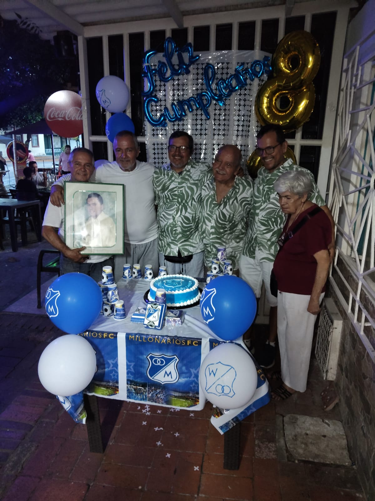

¿Quien es?
Él es Luis Fernando Cetares Ruiz, actualmente tiene 55 años.
Es una Buena Persona
Es un hombre de buen corazón que siempre se preocupa por los demas,
a veces más que si mismo.
Es un Gran padre
Probablemente la segunda persona que vieron en este mundo sus hijos (√≥ quizas tercera despues del doctor üòÖ),
y desde entonces a estado con ellos siempre que lo necesitan.
Es un Esposo Cariñoso
3 veces distintas le costo invitar a la mujer de su vida para que sea su novia,
y desde entonces ha sido una montaña rusa de emociones que ha durado hasta hoy.
Es un Mentor Sabio
En mi cabeza resuenan las pequeñas conversaciones y los grandes consejos que nos has dado en cada instante de nuestras
vidas, aún los guardo en mi memoria.
Es un Viajero Curioso
Siempre tiene un espiritu por conocer nuevos lugares, y desea compartir esas experiencias al lado de su familia y amigos.
Es un Hijo Ejemplar
Se siente orgulloso de sus padres, siempre los acompaña y vela por su bienestar
cada que puede.
Es un Hermano de Corazón

Creció y vivio experiencias con todos ellos, tienen un lazo más allá
de la sangre que perdura hasta nuestros días.
Él es Luis Fernando Cetares Ruiz
Un padre, un esposo, un mentor, un viajero, un hijo,
un hermano, un amigo ... y un Gran Ser Humano.
Sorpresa final üéÅ
Haz clic en el regalo para descubrir la sorpresa final.